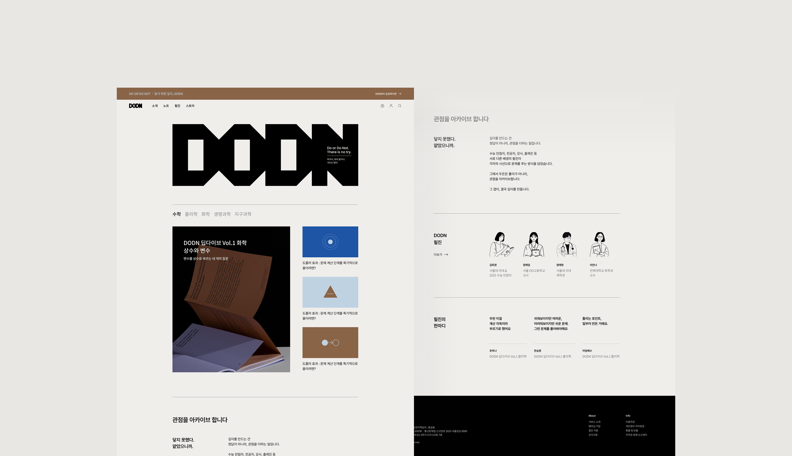
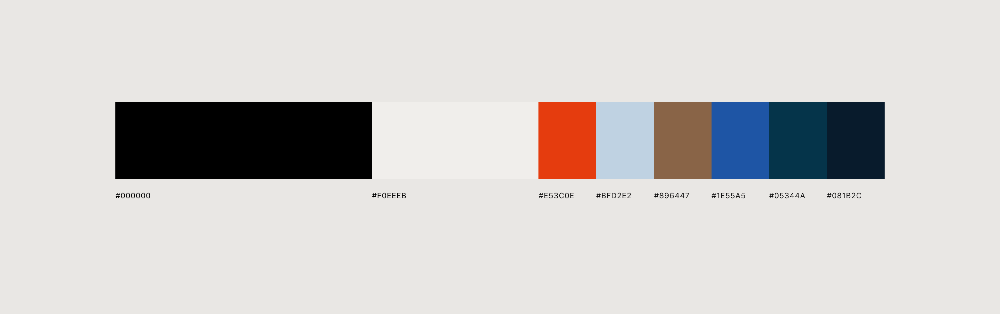
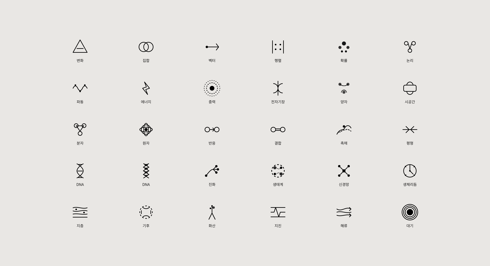
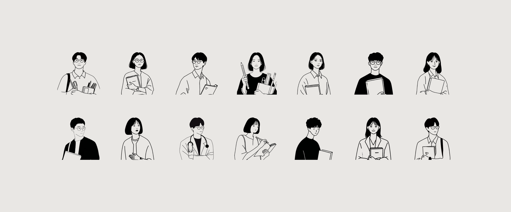
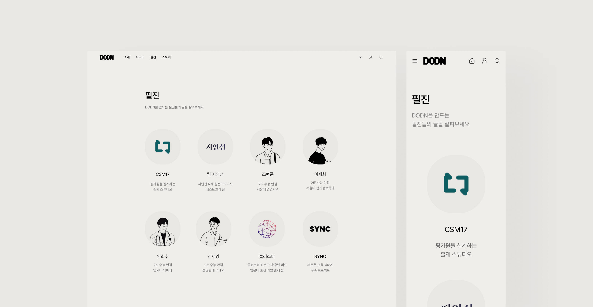

새이솔 두든 웹진
문제풀이의 효율보다 사고의 깊이와 관점의 다양성을 기록하는 학습 플랫폼으로 최상위권 학생을 위해 수학·과학 중심의 고난도 문제를 선별하여 제공
전공자, 강사, 수능 만점자 등 다양한 필진이 풀이가 아닌 관점을 공유하며, 문제 해결 과정에서 깊이를 만들어가는 사고 훈련형 콘텐츠 브랜드로 기획

현안 → 전략
01
정답 중심 학습의 한계
학생들은 빠른 정답 도출에만 집중하며, 사고의 폭이 제한됨
관점 아카이빙 플랫폼 구축
단순 풀이집이 아닌, 필진의 문제 접근 방식과 사고 단계를 시각화한
'노트형 콘텐츠' 제공
02
수험생의 피상적 이해
문제 풀이 과정이 외워진 공식에 치중되어, 과목별 개념 연결력이 떨어짐
과목별 Deep Dive 시리즈
수학·물리·화학·생명과학·지구과학 등 과목별로 '결정적 4문제' 중심
콘텐츠 구성
03
신뢰도 있는 전문 해설 접근의 어려움
고득점자, 현직 교사, 대학 전공자의 실제 사고 과정이 콘텐츠로
정리되어 있지 않음
필진 네트워크 기반 콘텐츠 생산
수능 만점자, 교사, 교수진으로 구성된 필진이 각자의 '풀이 관점'을 기록
04
교재형 콘텐츠의 일방향성
출제자의 의도나 필진의 사고 흐름이 사용자에게 전달되지 않음
아카이브 중심 UX 설계
사용자 여정 전반에서 사고의 흔적을 기록하고 확장하는 경험을 유도
퍼소나 & 여정
김이솔 · 수능 수험생, 과탐 선택자
정시 수능에서 상위권 대학 진학이 목표. 수학·과학 과목에 관심이 높고, 문제 풀이 과정에서 이해 중심 학습을 선호함
그래서, 김이솔의 여정은 이렇게 이어집니다
탐색
'변수와 함수의 관계'가 어려워 검색을 통해
두든 웹진에 유입
몰입
'상수와 변수' 아카이브 열람, 필진(교수·교사·동료)의
다양한 풀이 관점을 비교하며 개념 확장
상호작용
관련 화학 콘텐츠 카드로 학습 확장,
노트 기능으로 본인 풀이 과정 기록
성취
사고 확장 경험을 통해 정기 구독,
탐구 기반 학습 습관 강화
Color System
블랙 & 아이보리 베이스에 과목별 포인트 컬러(수학·물리·화학·생명과학·지구과학)를 매칭해, 무거운 학습 콘텐츠에도 정돈된 신뢰감을 부여
아카이브를 넘나들 때도 컬러만으로 '지금 보고 있는 과목'을 직관적으로 인지하도록 설계

수학, 과학 아토믹 아이콘 컬렉션
수학·물리학·화학·생명과학·지구과학 5개 과목의 핵심 개념을 현대적 미니멀 라인으로 형상화한 아토믹 아이콘 세트
과목 특유의 기호와 원리를 은유적으로 압축해, 본문을 읽기 전에도 콘텐츠 성격을 아이콘만으로 구분 가능
Figma AI 프롬프트로 초안을 생성한 뒤 그리드에 맞춰 획 두께와 디테일을 수작업으로 리터치

필진 소개 일러스트
실물 사진 공개의 부담을 느낄 필진을 위해 흑백 단선 일러스트를 사용해 필진의 개인정보는 보호하면서도 개개인의 개성은 살려 표현
과목·직업군에 따라 소품과 포즈를 다르게 그려, 텍스트 설명 없이도 어떤 필진인지 시각적으로 구분
최상위권 수험생 타겟에 맞춰 장식을 덜어낸 모던하고 절제된 톤 유지
다양한 인물 레퍼런스를 리서치한 뒤 미드저니 프롬프트로 생성, 선 굵기와 구도를 통일감 있게 리터치

Highlight · 필진 소개
수능 만점자·교수·교사, 얼굴이 보이는 신뢰
다양한 배경의 필진을 인물 중심 카드형 UI로 전면에 배치해 콘텐츠의 신뢰성과 전문성을 시각적으로 전달. 텍스트 타이포그래피와 여백 중심 레이아웃으로 필진 개개인의 관점에 감정적으로 연결

결과
정답이 아닌 사고 과정을 남기는 아카이빙 플랫폼으로 전환
신뢰할 수 있는 필진 네트워크로 깊이 있는 학습 경험을 완성
01 · 정답 중심 학습의 한계
관점 아카이빙 플랫폼으로 해결
02 · 수험생의 피상적 이해
과목별 Deep Dive 시리즈로 해결
03 · 전문 해설 접근의 어려움
필진 네트워크 구축으로 해결
04 · 콘텐츠의 일방향성
아카이브 중심 UX로 해결